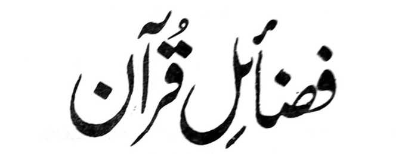

Manga Kalbihan o Qur'an
(Paganay a Kinitogalinen)
Pho-on ko
Kisosorat lyan sa Basa Urdu ko

FADHA-ILE QUR'AN
A In isorat o
Shaikul Hadith
Maulana Mohammad Zacariyyah Kandhlawi
(Rahmatullahi Alaihi)
MASJID ABU BAKR AS-SIDDIQ
Basak Malet-let, Marawi City
PHILIPPINES, 2000
MADADALEMON
PAMKASAN
BA-AD I - PAT POLO A MANGA HADITH
1. Antawa-ai makalelebi a tao
2. So manga kamapiya-an ago so manga Kalbihan o Katharo o Allah
3. So balas o dowa, odi na telo, o di na Pat a Ayaat
4. So manga balas o kapasangi kabatiya ago so kapephangariribat o kabatiya
5. So dowa a shai a kiyapakayan ko Kapangasigi
6. So ibarat o siran a pembatiya-an niran So Qur’an ago so siran a di ran mbati-ya-an
7. So kiporo ago so kibaba o manga tao Sabap bo ko Qur’an
8. So telo a matatago ko kababa-an o ‘Arsh (o Allah) ko Gawi-i a Kapha-ngokom
So katamat sa makadowa ko soled a Saragon na kabenar o Qur’an
So kapanapsir na si-i bo doma-da-it ko siran a mala-i kata-o ko sapolo ago lima a barangan a kata-o
9. So kaporo a pangkatan ko Sorga Misabap ko Qur’an
10. So balas a sapolo a mapiya ko omani Batang o Qur’an
11. So mbala a lokes o tao a pembatiya Sa Qur’an ago rakhes a ininggolalan Niran na makapezangkad sa sangkad A masindao a di so alongan
12. So apoy na di niyan khatotong so Qur’an
13. So tao a milangag iyan so Qur’an ago Inggolalan niyan na phakasapa-at sa Sapolo katao
14. So kiyapaka-ibarat o miyaganad Sa Qur’an sa pontir a mapepeno a Kastori
15. So poso a da a madadalemon a ped ko Qur’an na lagid o walay a inawa-an
16. So kabatiya-a ko Qur’an ko soled o Sambayang na makalelebi sa balas
17. So balas o kabatiya sa telo a Ayaat Ko Sambayang
18. So balas o kabatiya pho-on ko Kapangadi-i ko kitab ago pho-on Ko milalangag
19. So kabatiya sa Qur’an na pekhalalas Iyan so tangis ko poso
20. So Qur’an na aya bantogan ago Daradat o manga Muslim
21. So kabatiya sa Qur’an na sindao ko kaoyag-oyag sa donya ago loto ko Alongan a Maori
So manga walay a pembatiya-an Non so Qur’an na pezigay sa lagid O olan ago manga bito-on ko Manga ka-aden ko langit
So rirayan ago so mapapadalem ko Manga kitab a inipamanoron
22. So kapethoron o Sakinah ago so Limo, go so kaphelibeta o manga Mala-ikat ko sagorompong a mnga Tao a pembatiya-an niran so Qur’an
23. So siran a khabaya makarani ko Allah na da den a salakao a mapiya Okit a rowar ko kabatiya-a ko Qur’an
So taginepen o Imam Ahmad ibn-e Hambal
So okit a kipangkat ko daradat a ‘Ihsan
24. So manga tao o Qur’an na aya Manga ta-alok o Allah
25. So matanos a kapephamakinega O Allah ko Nabi a pembatiya-an Niyan so Qur’an sa mapiya lagam
26. So matanos a kapephamakinega o Allah ko kapembatiya o Qari Sa Qur’an
So Hadhrat Abdullah ibn-e Mas’ud ago so sakatao a pagi-ida-ida
27. So kipephangoyaten o Nabi ko Kabatiya sa Qur’an ko gagawi-i Daon-dao
So inabat ko Taurat
28. So Qur’an na miyadiyamong-on So madadalem ko miyanga-oona A manga kitab ago aden pen a Liyo-liyowan a milelebi niyan
29. So kiya-ontod o Nabi a ped o manga miskin ko manga Muhajirin
30. So balas o kabatiya ago so kapama-Makingga ko kapembatiya-a ko Qur’an
31. So balas o matanog ago ma-ipes a Kabatiya
32. So kaphanapa-at o Qur’an
33. So kaphanapa-at o Powasa ago so Qur'an
So totholan ko kabatiya
So manga bitikan ko kapakatamat Sa Qur’an
34. Da a makaphanapa-at a ba niyan Kalawani so Qur’an
So kaphakalinding o Qur’an ko Soled a Qobor
35. So tao a pembatiya sa Qur’an na Miyakaparoli ko rareb iyan sa ‘Ilmo A kananabi-i
36. So telo barang a manga tao a maka-Pendalakao ko manga darepa a Manga amot a kastori
37. So kapakasowa sa isa bo a Ayaat na Tomo a di so magatos ka rak-at a Nafl a Sambayang
38. Sa tao a makabatiya sa sapolo a Ayaat Na di khi-itong ko madarainon
39. So tao a tatap ko Sambayang na di Khaped ko madarainonen
40. So Kitab o Allah na linding ko manga rarata a tiyoba
BA-AD 2 - KAPOSAN A BA-AD
1. So Surah Fatihah na bolong ko langowan A sakit
2. So Balas o Surah Yasin
3. So Balas o Surah Waqi’ah
4. So Balas o Surah Tabarak-al-Ladhi
5. Antona-ai piphaporo-an a mala-i balas A ‘amaal
6. So kipapaliyogat a kapharihala-a ko Qur’an
7. So kasikasa-an ko kabatiya-a ko Qur’an Pantag bo ko kamapiya-an sa donya
BA-AD 3 - MORI A THANODAN
BA-AD 4 - PAGOMAN A THANODAN